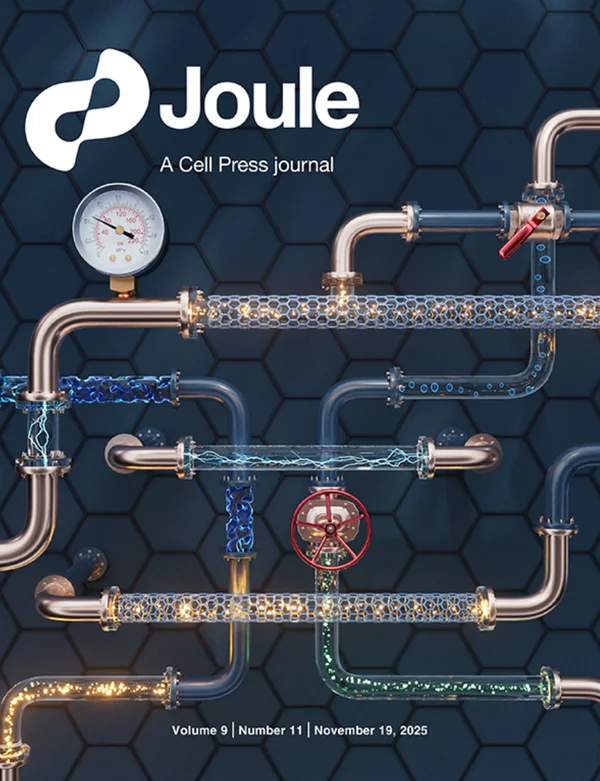
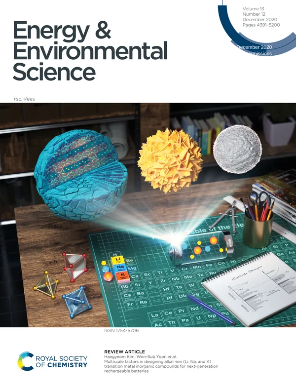
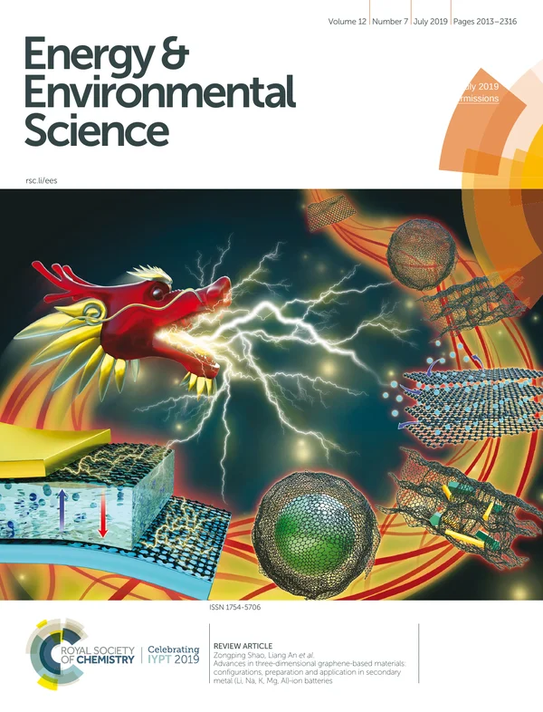
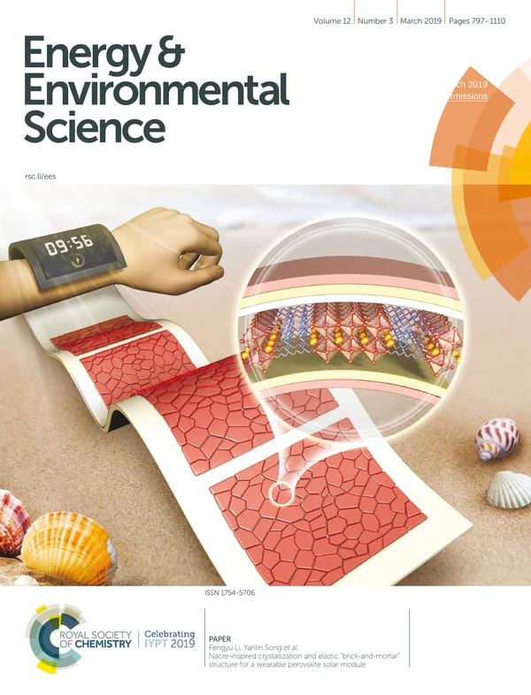
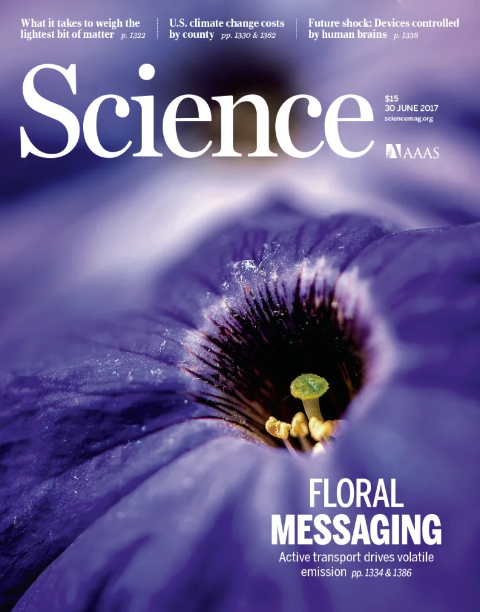

Publications
Publications
* Corresponding author
Selected Papers










All Papers
2026
- 66
Volatile eutectics to tailor crystallization for perovskite optoelectronics
Jason J Yoo, Connor J Dolan, Seongsik Nam, Jinho Lee, Kyu Min Kang, Bong Joo Kang, Rushik Desai, Niranjana Mohan Kumar, Arkita Chakrabarti, Daesoo Kim, Jang Hee Cho, Donghyuk Chung, Jack R Palmer, Kelly X Vences, Zhewen JD Deng, Yanqi Luo, Barry Lai, Tao Zhou, Zhonghou Cai, Martin V Holt, Andrew M Kiss, In Sun Cho, Dong Hyun Kim, Jun Hong Noh, Mariana I Bertoni, Arun Mannodi-Kanakkithodi, Dane W deQuilettes, David P Fenning, Seong Sik Shin*
Science (IF 47.3) 394 (6820), 228-233, 2026/10/8
- 문화일보 “성균관대 신성식 교수팀, 초저결함 반도체 박막 ‘휘발성 공융 혼합물’ 세계 최초 개발”
- 한국강사신문 “성균관대학교 신성식 교수팀, 초저결함 페로브스카이트 반도체 박막 개발…태양전지·LED 동시 구현”
- 뉴스티앤티 “성균관대, 결함 대폭 줄인 페로브스카이트 박막 개발”
언론 보도 6건 더보기
- 핀포인트뉴스 “성균관대 신성식 교수팀, 초저결함 페로브스카이트 개발… 태양전지·LED 동시 구현”
- 이데일리 “성균관대, 초저결함 반도체 박막 개발…태양전지·LED 동시 구현”
- 이뉴스투데이 “성균관대 신성식 교수팀, 태양전지와 LED를 하나로, 차세대 반도체 기술 개발”
- 스마트경제 “하나의 소자로 전기를 만들고 빛까지 낸다…공융 현상 기반 ‘초저결함 페로브스카이트 반도체’ 세계 최초 개발”
- 로이슈 “성균관대 신성식 교수팀, 페로브스카이트 반도체 박막 개발”
- 에스프레스(성대뉴스) “신성식 교수팀, 공융 현상으로 초저결함 반도체 박막 개발… 태양전지·LED 동시 구현”
- 65
Sae Jin Sung, Yeonsu Jung, Seongsik Nam, Sehyun Kang, Jong Jin Chung, Gabkyung Seo, Jason J. Yoo, Yoo Jae Jeong, Shanshan Gao, In Sun Cho, Nam Joong Jeon, Seong Sik Shin*
Chemical Engineering Journal(IF 12.5) 2026/5/15
- 64
Jong-In Huh, Geon Woo Yoon, Oh Yeong Gong, Woo Seok Kang, Dae-Woong Ko, Su Eon Ji, Seongsik Nam, Seong Sik Shin, Gill Sang Han, Hyun Suk Jung
ACS Energy Letters(IF 17.5) 2026/4/30
- 63
Runfa Tan, Yoo Jae Jeong, Hyun Soo Han, Samadhan Kapse, Seong Sik Shin, Xiaolin Zheng, In Sun Cho
Nano-Micro Letter(IF 38.5) 2026/1/8
- 62
Interlayer engineering in metal halide perovskite photovoltaics
Seong Sik Shin, Byung-wook Park, Jun Hong Noh, Sang Il Seok
Nature Photonics (IF 32.9) 2026/1/6
2025
- 61
Perovskite solar cells remain stable under realistic day-night cycling conditions
Shanshan Gao, Ah Hyun Shin, Seong Sik Shin*
Joule (IF 35.4) 2025/11/19
- 60
Sae Jin Sung, Yeonsu Jung, Gabkyung Seo, Taehoon Kim, Seongsik Nam, Jason J. Yoo, Carlo Andrea Riccardo Perini, Jin Ho Oh, Nam Joong Jeon, Juan-Pablo Correa-Baena, Seong Sik Shin*
Advanced Functional Materials (IF 19.0) 2025/10/24
- 59
Gabkyung Seo, Jason J. Yoo, Seongsik Nam, Da Seul Lee, Shanshan Gao, Bo Kyung Kim, Sae Jin Sung, Bong Joo Kang, Dane W. deQuilettes, Junho Park, Ji-Sang Park, In Sun Cho, Fabian Rotermund, Sang Il Seok & Seong Sik Shin*
Nature Energy (IF 56.7) 2025/6/4FRONT COVER
- 58
Runfa Tan, Seo Yeong Hong, Yoo Jae Jeong, Seong Sik Shin*, In Sun Cho
Journal of Energy Chemistry (IF 14.0) 2025/9
- 57
Shanshan Gao, Jeong‐Ju Bae, Da Seul Lee, Tae‐Youl Yang, Seong Sik Shin*
EcoMat (IF 10.7) 2025/2/19
2024
- 56
Solution-flame hybrid synthesis of defect-enriched meosporous CuOx nanowires for enhanced electrochemical nitrate-to-ammonia production
Li Qu, Sungkyu Kim, Runfa Tan, Armugam Sivamtham, Seokgi Kim, Yoo Jae Jeong, Min Cheol Kim,Seong Sik Shin* , Uk Sim, In Sun Cho
Journal of Energy Chemistry (IF 14.0) 2024/7/28
- 55
Mitigation of parasitic leakage current in indoor perovskite photovoltaic modules using porous alumina interlayer
Gyeong G. Jeon, Da Seul Lee, Min Jun Choi, You-Hyun Seo, Shujuan Huang, Jong H. Kim, Seong Sik Shin*, JinCheol Kim
EcoMat (IF 10.7) 2024/5/29
- 54
Junho Park, Bong Joo Kang, Gapkyung Seo, Juwon Kim, Tae Gwan Park, Seongsik Nam, JasonJ. Yoo, Kitae Lee, Young Uk Jeong, Myongkee Park, Seong Sik Shin*, Fabian Rotermund
Advanced Energy Materials (IF 27.8) 2024/5/27
- 53
Yoo Jae Jung, Runfa Tan, Seong Sik Nam, Jomg Ho Lee, Sung Kyu Kim, Tae Gyu Lee, Seong Sik Shin*, Xiaolin Zheng, In Sun Cho
Advanced Materials (IF 29.4) 2024/5/8
- 52
Pyrophosphate interlayer improves performance of semi-transparent perovskite solar cells
Jason J. Yoo, Jin-Won Lee, Yeonkyeong Ju, Bong Joo Kang, YoungWoong Kim, Beom-Soo Kim, Young Yun Kim, Seong sik Shin*, Tae Joo Shin, Nam Joomg Jeon
Journal of Materials Chemistry A (IF 11.9) 2024/4/25
- 51
Tatachari Santhanagopalan Shridharan , Arumugam Sivanantham, Jong Ho Lee, Seo Yeong Hong, Yoo Jae Jeong, Seong Sik Shin*, In Sun Cho
Chemical Engineering Journal (IF 15.1) 2024/4/15
- 50
Overcoming stability limitations of efficient, flexible perovskite solar modules
Da Seul Lee, Ki Woong Kim, You-Hyun Seo, Myung Hyun Ann, Wonkyu Lee, Jiyeon Nam, Jaehoon Chung, Gabkyung Seo, Seongsik Nam, Boo Soo Ma, Teak-Soo Kim, Yoonmook Kang, Nam Joong Jeon, Jangwon Seo, Seong Sik Shin*
Joule (IF 39.8) 2024/2/29 (Front Cover)FRONT COVER
- 49
Reduced recombination via tunable surface fields in perovskite thin films
Dane W deQuilettes, Jason J Yoo, Roberto Brenes, Felix Utama Kosasih, Madeleine Laitz, Benjia Dak Dou, Daniel J Graham, Kevin Ho, Yangwei Shi, Seong Sik Shin*, Caterina Ducati, Moungi G Bawendi, Vladimir Bulović
Nature Energy (IF 56.7) 2024/2/28
2023
- 48
Jaehoon Chung, Seung‐Woo Kim, You Li, Tamanna Mariam, Xiaoming Wang, Manoj Rajakaruna, Muhammad Mohsin Saeed, Abasi Abudulimu, Seong Sik Shin, Kathryn N Guye, Zixu Huang, Robert JE Westbrook, Emily Miller, Biwas Subedi, Nikolas J Podraza, Michael J Heben, Randy J Ellingson, David S Ginger, Zhaoning Song, Yanfa Yan
Advanced Energy Materials (IF 27.8) 2023/4/22
- 47
Youngwoong Kim, Geunjin Kim, Eun Young Park, Chan Su Moon, Seung Joo Lee, Jason J Yoo, Seongsik Nam, Jino Im,Seong Sik Shin, Nam Joong Jeon, Jangwon Seo
Energy & Environmental Science 2023/3/29
2022
- 46
Toward Efficient Perovskite Solar Cells: Progress, Strategies, and Perspectives
JJ Yoo, Seong Sik Shin*, J Seo
ACS Energy Letters (IF 22.0) 7, 2084-2091
- 45
SJ Sung, J Im, G Kim, CS Moon, JJ Yoo, Seong Sik Shin, NJ Jeon, BS Ma, ...
Advanced Energy Materials (IF 27.8) , 2200758
2021
- 44
Efficient perovskite solar cells via improved carrier management
JJ Yoo, G Seo, MR Chua, TG Park, Y Lu, F Rotermund, YK Kim, CS Moon, NJ Jeon, JP Correa-Baena, V Bulović, Seong Sik Shin*, M Bawendi, J Seo
Nature (IF 64.8) 590 (7847), 587-593 (Front Cover)FRONT COVER
- 43
DG Lee, DH Kim, JM Lee, BJ Kim, JY Kim, Seong Sik Shin*, HS Jung
Advanced Functional Materials (IF 19.0), 2006718
- 42
High-performance bulky crystalline copper bismuthate photocathode for enhanced solar water splitting
G Seo, B Kim, SW Hwang, Seong Sik Shin*, IS Cho
Nano Energy(IF 17.6) 80, 105568
- 41
S Song, EY Park, BS Ma, DJ Kim, HH Park, YY Kim, Seong Sik Shin, NJ Jeon, TS Kim, J Seo
Advanced Energy Materials (IF 27.8) 11 (10), 2003382
2020
- 40
HH Park, J Kim, G Kim, H Jung, S Kim, CS Moon, SJ Lee, Seong Sik Shin, X Hao, JS Yun, MA Green, A WY Ho‐Baillie, NJ Jeon, TY Yang, J Seo
Small Methods (IF 12.4) 4 (5), 2000074
- 39
SM Bang, Seong Sik Shin, NJ Jeon, YY Kim, G Kim, TY Yang, J Seo
ACS Energy Letters (IF 22.0) 5 (4), 1198-1205
- 38
J Chung, Seong Sik Shin, K Hwang, G Kim, KW Kim, W Kim, BS Ma, YK Kim, TS Kim, J Seo
Energy & Environmental Science (IF 32.5) 13 (12), 4854-4861
2019
- 37
Metal oxide charge transport layers for efficient and stable perovskite solar cells
Seong Sik Shin, SJ Lee, SI Seok
Advanced Functional Materials (IF 19.0) 29 (47), 1900455
- 36
Impact of electrode materials on process environmental stability of efficient perovskite solar cells
J Chung+, Seong Sik Shin+, G Kim, NJ Jeon, TY Yang, JH Noh, J Seo
Joule (IF 39.8) 3 (8), 1977-1985
- 35
TY Yang, NJ Jeon, HW Shin, Seong Sik Shin, YY Kim, J Seo
Advanced Science (IF 15.1) 6 (14), 1900528
- 34
Exploring wide bandgap metal oxides for perovskite solar cells
Seong Sik Shin, SJ Lee, SI Seok
APL Materials 7 (2), 022401
- 33
An interface stabilized perovskite solar cell with high stabilized efficiency and low voltage loss
JJ Yoo, S Wieghold, MC Sponseller, MR Chua, SN Bertram, NTP Hartono, ...JS Tresback, E C Hansen, JP Correa-Baena, V Bulović, T Buonassisi, Seong Sik Shin*, M Bawendi
Energy & Environmental Science (IF 32.5) 12 (7), 2192-2199
- 32
Seong Sik Shin, JH Suk, BJ Kang, W Yin, SJ Lee, JH Noh, TK Ahn, F Rotermund, IS Cho, SI Seok
Energy & Environmental Science (IF 32.5) 12 (3), 958-964
2018
- 31
S Wieghold, JP Correa-Baena, L Nienhaus, S Sun, KE Shulenberger, Z Liu, JS Tresback, Seong Sik Shin, M Bawendi, T Buonassisi
ACS Applied Energy Materials 1 (12), 6801-6808
- 30
JP Correa-Baena, L Nienhaus, RC Kurchin, Seong Sik Shin, S Wieghold, ...
Chemistry of Materials 30 (11), 3734-3742
- 29
Seong Sik Shin, JP Correa Baena, RC Kurchin, A Polizzotti, JJ Yoo, S Wieghold, M Bawendi, T Buonassisi
Chemistry of Materials 30 (2), 336-343
2017
- 28
SJ Lee, Seong Sik Shin, J Im, TK Ahn, JH Noh, NJ Jeon, SI Seok, J Seo
ACS Energy Letters (IF 22.0) 3 (1), 46-53
- 27
Improving the carrier lifetime of tin sulfide via prediction and mitigation of harmful point defects
A Polizzotti, A Faghaninia, JR Poindexter, L Nienhaus, V Steinmann, R Hoye, A Felten, A Deyine, N Mangan, JP Correa-Baena, Seong Sik Shin, S Jaffer, M Bawendi, C Lo, T Buonassisi
The journal of physical chemistry letters 8 (15), 3661-3667
- 26
Iodide management in formamidinium-lead-halide–based perovskite layers for efficient solar cells
WS Yang, BW Park, EH Jung, NJ Jeon, YC Kim, DU Lee, Seong Sik Shin, J Seo, ...
Science (IF 56.9) 356 (6345), 1376-1379
- 25
Colloidally prepared La-doped BaSnO3 electrodes for efficient, photostable perovskite solar cells
Seong Sik Shin, EJ Yeom, WS Yang, S Hur, MG Kim, J Im, J Seo, JH Noh, ...
Science (IF 56.9) 356 (6334), 167-171
- 24
DW Kim, JU Kim, Seong Sik Shin, JY Cho, IS Cho
Journal of Alloys and Compounds 697, 222-230
- 23
EJ Yeom, Seong Sik Shin, WS Yang, SJ Lee, W Yin, D Kim, JH Noh, TK Ahn, ...
Journal of Materials Chemistry A (IF 11.9) 5 (1), 79-86
2016
- 22
Tailoring of electron-collecting oxide nanoparticulate layer for flexible perovskite solar cells
Seong Sik Shin, WS Yang, EJ Yeom, SJ Lee, NJ Jeon, YC Joo, IJ Park, JH Noh, ...
The journal of physical chemistry letters 7 (10), 1845-1851
- 21
SJ Lee, Seong Sik Shin, YC Kim, D Kim, TK Ahn, JH Noh, J Seo, SI Seok
Journal of the American Chemical Society (IF 15.0) 138 (12), 3974-3977
2015
- 20
JS Kim, Seong Sik Shin, HS Han, S Shin, JH Suk, K Kang, KS Hong, IS Cho
Journal of Nanomaterials 2015
- 19
JH Park, J Seo, S Park, Seong Sik Shin, YC Kim, NJ Jeon, HW Shin, TK Ahn, ...
Advanced Materials (IF 29.4) 27 (27), 4013-4019
- 18
Seong Sik Shin, WS Yang, JH Noh, JH Suk, NJ Jeon, JH Park, JS Kim, ...
Nature communications (IF 16.6) 6 (1), 1-8
- 17
Fabrication of metal-oxide-free CH 3 NH 3 PbI 3 perovskite solar cells processed at low temperature
S Ryu, J Seo, Seong Sik Shin, YC Kim, NJ Jeon, JH Noh, SI Seok
Journal of Materials Chemistry A (IF 11.9) 3 (7), 3271-3275
2014
- 16
Seong Sik Shin, DW Kim, JH Park, DH Kim, JS Kim, KS Hong, IS Cho
Langmuir 30 (51), 15531-15539
- 15
Three-dimensional hierarchical Li4Ti5O12 nanoarchitecture by a simple hydrothermal method
S Park, SD Seo, HJ Kim, CW Lee, HJ Song, Seong Sik Shin, HK Park, KS Hong, ...
Journal of Nanoscience and Nanotechnology 14 (12), 9307-9312
- 14
Zn2SnO4-Based Photoelectrodes for Organolead Halide Perovskite Solar Cells
LS Oh, DH Kim, JA Lee, Seong Sik Shin, JW Lee, IJ Park, MJ Ko, NG Park, ...
The Journal of Physical Chemistry C 118 (40), 22991-22994
- 13
S Park, HJ Kim, CW Lee, HJ Song, Seong Sik Shin, SW Seo, HK Park, S Lee, DWKim, KS Hong
International journal of hydrogen energy 39 (29), 16459-16467
- 12
Seong Sik Shin, DW Kim, D Hwang, JH Suk, LS Oh, BS Han, DH Kim, JS Kim, D Kim, JY Kim, KS Hong
ChemSusChem 7 (2), 501-509
- 11
JH Park, DH Kim, Seong Sik Shin, HS Han, MH Lee, HS Jung, JH Noh, KS Hong
Advanced Energy Materials (IF 27.8) 4 (3), 1300395
- 10
JS Kim, Seong Sik Shin, HS Han, LS Oh, DH Kim, JH Kim, KS Hong, JY Kim
ACS applied materials & interfaces 6 (1), 268-274
2013
- 9
BaSnO3 Perovskite Nanoparticles for High Efficiency Dye‐Sensitized Solar Cells
DW Kim, SS Shin, S Lee, IS Cho, DH Kim, CW Lee, HS Jung, KS Hong
ChemSusChem 6 (3), 449-454
- 8
Improved Quantum Efficiency of Highly Efficient Perovskite BaSnO3-Based Dye-Sensitized Solar Cells
SS Shin, JS Kim, JH Suk, KD Lee, DW Kim, JH Park, IS Cho, KS Hong, ...
ACS nano (IF 19.1) 7 (2), 1027-1035
2012
- 7
Simple synthesis and characterization of SrSnO3 nanoparticles with enhanced photocatalytic activity
CW Lee, DW Kim, IS Cho, S Park, Seong Sik Shin, SW Seo, KS Hong
International journal of hydrogen energy 37 (14), 10557-10563
- 6
JH Park, JH Noh, BS Han, Seong Sik Shin, IJ Park, DH Kim, KS Hong
Journal of Nanoscience and Nanotechnology 12 (6), 5091-5095
- 5
Seong Sik Shin, DW Kim, S Lee, IS Cho, DH Kim, JH Park, KS Hong
Journal of Nanoscience and Nanotechnology 12 (2), 1305-1309
- 4
Synthesis and photovoltaic property of fine and uniform Zn 2 SnO 4 nanoparticles
DW Kim, Seong Sik Shin, IS Cho, S Lee, DH Kim, CW Lee, HS Jung, KS Hong
Nanoscale 4 (2), 557-562
2011
- 3
Electronic band structures and photovoltaic properties of MWO4 (M= Zn, Mg, Ca, Sr) compounds
DW Kim, IS Cho, Seong Sik Shin, S Lee, TH Noh, DH Kim, HS Jung, KS Hong
Journal of Solid State Chemistry 184 (8), 2103-2107
- 2
IS Cho, DW Kim, DH Kim, Seong Sik Shin, TH Noh, DW Kim, KS Hong
European Journal of Inorganic Chemistry 2011 (14), 2206-2210
2010
- 1
Photophysical and Photocatalytic Properties of Ag2M2O7 (M=Mo, W)
DW Kim, IS Cho, S Lee, ST Bae, Seong Sik Shin, GS Han, HS Jung, KS Hong
Journal of the American Ceramic Society 93 (11), 3867-3872